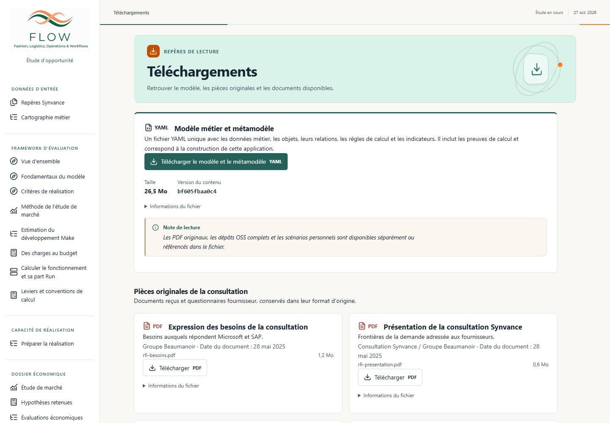

FLOW · Mise en œuvre de l’audit · 31 octobre 2026
Core Domain / Support et catalogue des téléchargements
6 660 JH et 4 198 680 € HT conservés. Les décisions adoptées, leurs rôles, leurs délais et le référentiel reçu ne sont pas modifiés. La comparaison de la projection de référence est identique sur les cinq options et tous les horizons.
3 876 JHCore Domain
2 440 808 € HT
2 784 JHSupport
1 757 872 € HT
Un classement selon la valeur du produit Flow
Les définitions partagées sont dans le glossaire. Le fichier des fonctions du produit déclare le point de vue, le critère et le statut d’hypothèse de positionnement. Chaque fonction et chaque lot disposent d’un motif.
Process Management générique, son moteur, ses studios, son portail et son pilotage sont reclassés en Support. Les ateliers propres à la planification et aux décisions de la chaîne logistique restent dans le Core Domain. Les 104 JH de services transverses déjà financés dans Master Data restent dans ses 1 500 JH. Les rôles QA, architecture, plateforme et sécurité contribuent aux deux catégories.
La nouvelle ventilation remplace la lecture métier / IT. Les catégories historiques des preuves figées sont conservées pour reproduire les calculs, sans définir le classement courant. Les règles arithmétiques restent identiques dans le métamodèle unique. Celui-ci décrit aussi le catalogue et le livrable téléchargeable.
Conservation des rôles
| Rôle | Core Domain, JH | Support, JH | Total, JH |
|---|
| coordination | 446 | 301 | 747 |
|---|
| analyse_produit | 391 | 269 | 660 |
|---|
| architecture | 337 | 257 | 594 |
|---|
| dev_java | 1 336 | 675 | 2 011 |
|---|
| dev_frontend | 346 | 557 | 903 |
|---|
| qa | 540 | 403 | 943 |
|---|
| plateforme | 329 | 179 | 508 |
|---|
| ux | 76 | 74 | 150 |
|---|
| securite | 75 | 69 | 144 |
|---|
| Total | 3 876 | 2 784 | 6 660 |
|---|
Un troisième axe dans les Fondamentaux
Le chapitre Core Domain et Support est au même niveau que Make / Buy et Build / Run, dans Fondamentaux → Modes et activités. Il référence l’objet métier canonique, le produit concerné et les catégories existantes. Les définitions sont lues dans le glossaire. Deux exemples et la distinction Support / Run expliquent l’indépendance des axes, sans ajouter de budget.
Contrôle final des fondamentaux et du téléchargement · Capture des trois axes
Téléchargements après Glossaire
Ouvrir la page locale. Le catalogue rassemble le YAML unique du modèle et du métamodèle, les sept pièces originales Synvance et sept documents de lecture. Il donne aussi accès à l’export JSON personnel dans Simuler.
Chaque fichier indique son format, sa taille, son nom et son empreinte. Les pièces originales conservent leurs dates documentaires et leur provenance. Pour le modèle, les métadonnées sont produites depuis les mêmes octets et la même empreinte de sources que le YAML. Le lien contextuel dans les fondamentaux reste présent, avec un pictogramme YAML explicite.
Aucun YAML source individuel n’est ajouté au catalogue, aucun nouvel Excel n’est généré et aucun scénario personnel n’est publié. Le glossaire Markdown a été régénéré depuis sa source canonique pour inclure les nouvelles définitions.
Points ouverts explicitement conservés
Les différences avec COSMIC restent non réconciliées. Les essais techniques ne sont pas une calibration de productivité. Le périmètre chiffré ne prouve pas toutes les garanties du produit. Les budgets d’intégration et de fonctionnement restent inchangés, avec un suivi explicite de leur adéquation au périmètre professionnel élargi.
Le calendrier global de 48 mois reste provisoire. Les délais locaux ne sont pas additionnés. Master Data conserve 17 mois, Stock 10 mois et Propriété du stock 7 mois. Le classement stratégique reste une hypothèse de l’étude à confronter à la vision du produit.
Vérifications
Les résultats sont détaillés dans la validation du modèle et du client, les contrôles du navigateur et la vérification du fichier réellement téléchargé. Les essais du navigateur vérifient notamment les formats, les empreintes, le menu mobile, le clavier, les liens du glossaire et les écrans financiers concernés.
Une erreur du générateur, qui essayait de relire un document Markdown comme du YAML lors de la reprise d’un chargement validé, a été corrigée et couverte par un test de non-régression. Les erreurs de sélection rencontrées dans le script de contrôle du navigateur sont conservées dans ses relevés intermédiaires.
Écrans vérifiés

Vue mobile des téléchargements · Classement Core Domain et Support